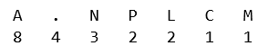
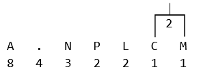
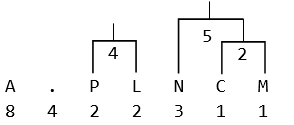
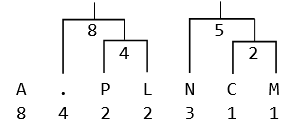
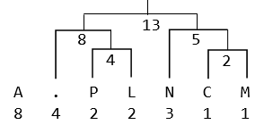
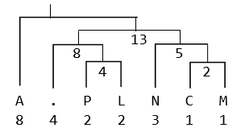
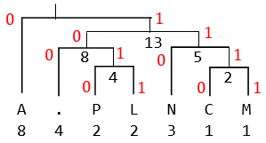

Trong máy tính, khi lưu một văn bản xuống đĩa cứng, người ta thường dùng bản mã ASCII, một ký tự là 1 byte 8 bít. Ví dụ với câu văn bản sau: A.PLAN.A.CANAL.PANAMA
Câu văn bản trên có 21 ký tự. Do đó nếu biểu diễn bằng mã ASCII, thì chiều dài của câu văn trên là 21 byte (168 bít). Tuy nhiên với nhận xét rằng tần suất xuất hiện của các ký tự không đều, chữ A xuất hiện nhiều nhất (8 lần), sau đó là dấu .(4), chữ N(3), P, L(2), C, M(1), người ta có ý tưởng là dùng một từ mã ít bít nhất để biểu diễn ký tự A. Các chữ C, M ít xuất hiện hơn thì dùng từ mã dài hơn, như vậy tổng số bít để biểu diễn câu văn bản trên sẽ được rút ngắn lại. Xét các từ mã:
A biểu thị bởi 0
Dấu chấm . biểu thị bởi 100
N biểu thị bởi 110
P biểu thị bởi 1010
L biểu thị bởi 1011
C biểu thị bởi 1110
M biểu thị bởi 1111
Các từ mã trên có tính chất là: một từ mã này không là tiền tố của bất cứ từ mã nào khác. Như vậy câu văn bản trên sẽ biểu diễn như sau:
0 100 1010 1011 0 110 100 0 100 1110 0 110 0 1011 100 1010 0 110 0 1111 0
(các khoảng trắng được thêm vào chỉ để dễ đọc, các bít khi lưu xuống đĩa cứng hay truyền qua mạng được lưu liên tục)
Do tính chất không tiền tố, từ dãy bít trên, tra bảng từ mã, ta có thể suy ra câu văn ban đầu (suy luận này là duy nhất, không có câu văn khác có cùng dãy bít trên). Số lượng bít của dãy trên là 8x1 + 4x3 + 3x3+(2+2+1+1)*4 = 53 bít, ít hơn con số 168 bít của biểu diễn bằng mã ASCII. Đây là số bít ít nhất, không thể tìm bộ từ mã nào khác cho ra tổng số bít biểu diễn ít hơn 53 được. Phương pháp rút gọn biểu diễn như trên được gọi là phương pháp nén Huffman. Quá trình ngược lại từ dãy bít suy ra lại câu văn bản ban đầu gọi là giải nén. Phương pháp nén Huffman được sử dụng trong các chuẩn nén dữ liệu phổ biến như ảnh JPEG, ảnh PNG, file ZIP...
Người ta sử dụng cây nhị phân để tìm từ mã Huffman. Có thể minh họa quá trình tạo cây nhị phân xây dựng bộ mã Huffman cho câu văn trên như sau:
1) Thiết lập N nút lá của cây, mỗi nút là một chữ cái cùng với tần suất xuất hiện:

2) Chọn hai nút có tần suất thấp nhất và tạo nút cha cho hai nút đó, tần suất nút cha là tổng tần suất hai nút con:

3) Tiếp tục chọn 2 nút có tần suất thấp nhất để thêm vào 1 nút mới:

4) Tiếp tục quá trình này N-1 lần cho đến khi tạo được nút gốc cho cây:




5) Đánh số tất cả các nút con bên trái là 0, tất cả các nút con bên phải là 1:

6) Xuất phát từ nút gốc, lần lượt duyệt đến các nút lá, các số 0, 1 trên đường đi từ nút gốc đến nút là chính là từ mã Huffman cho các nút lá tương ứng.
Trong quá trình tạo cây, tùy theo cách chọn 2 nút con mà ta có thể có các bộ mã Huffman khác nhau. Tuy nhiên các bộ mã này cùng cho ra biểu diễn nén có số bít đều là ít nhất.
Yêu cầu: cho một câu văn bản, hãy nén câu văn bản trên dùng phương pháp nén Huffman và cho biết số bít có được sau khi nén.
Dữ liệu nhập: gồm 2 dòng
- Dòng thứ nhất là số nguyên n, chiều dài của câu văn bản ban đầu (1 ≤ n ≤ 10.000)
- Dòng thứ hai là câu văn bản cần nén có chiều dài n, chỉ bao gồm các chữ cái la tinh, dấu chấm '.' và dấu phẩy ',', ngoài ra không có các ký tự khác.
Dữ liệu xuất:
- Là một số nguyên thể hiện số bít sau khi nén câu văn bản.
Ví dụ
-
input21
A.PLAN.A.CANAL.PANAMAoutput53